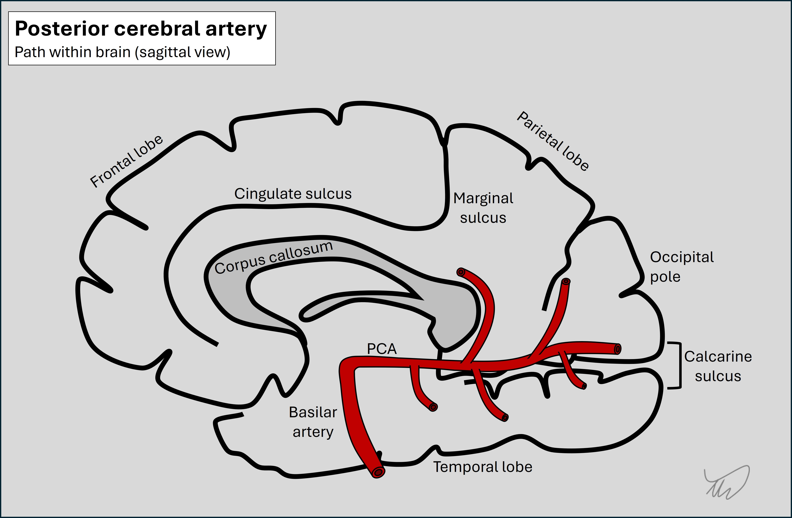

Case 8. Bumping into things
What is the lesion?
There is a differential diagnosis here - but the history is acute (10 days), so we should particularly consider lesions such as vascular or inflammatory conditions which might produce this problem quickly.
VascularA stroke producing a homonymous inferior quadrantanopia is certainly possible. Even though the onset of the deficit is sudden, people don't always present at this moment, because, as discussed, they may not be aware of the deficit. Instead, they present with its consequences, and come to attention in the subacute stages following onset.
An ischaemic stroke is possible, due to a distal occlusion in the posterior cerebral artery (PCA), a vessel that runs along the medial surface of the brain. The PCA gives off multiple branches which perfuse parietal, temporal and occipital brain regions on both sides of the calcarine sulcus. In this case the occlusion would be in a superior branch affecting the superior division.

A haemorrhage is also possible. This would be more of a peripheral, lobar haemorrhage in contrast to the commoner pattern seen in association with small vessel disease (central, deep, often at or near the internal capsule). Lobar haemorrhage can be seen in conditions such as cerebral amyloid angiopathy or macrovascular lesions such as arteriovenous malformations.
InflammationThe timeframe is good for this - but it would be an unusual presentation for an inflammatory lesion.
Demyelinating lesions are typically quite small and produce deficits attributable to focal damage in a small region. While that can affect a large body segment (e.g. hemiparesis), it often produces more focused deficits. To cause quadrantanopia it would have to affect the optic radiation in a proximal point near the thalamus, somewhere near the retrolenticular fibres which project from the lateral geniculate nucleus through the internal capsule.
A larger inflammatory brain lesion is of course possible and could affect the superior radiation along its path, but this is relatively unusual. It can happen however and in some cases the lesions are tumefactive - i.e. having a space-occupying effect similar to tumours.
InfectionThis doesn't sound like meningitis or encephalitis. An abscess is possible and could produce this deficit if it affected the superior radiation - but the patient does not have any infective symptoms such as fever. People don't always - so we can't exclude this without imaging - but it's perhaps less likely.
TumourTumours are a consideration here. The breast cancer history is important not to overlook given the risks of late neurological metastatic complications even after an ‘all-clear’.
However, it would be slightly unusual for a tumour to present this quickly - unless very rapidly-growing, or associated with significant oedema that led to brain swelling, causing symptoms. This does happen, and often tumours do present in a stroke-like fashion with acute or even sudden-onset deficits. It may also be that the visual field defect has been progressing in the recent days - which is why the consequences of it are becoming more frequent and noticeable. This would be in keeping with a tumour rather than a stroke.
We might also expect headache with features of raised intracranial pressure (e.g. worse on waking or lying down) – though not always. People may just have deficits - headache isn't always present.
Other possibilitiesThe other major aetiologies don't sound likely. Neurodegeneration can sometimes cause visual field defects - particularly in posterior cortical atrophy (PCA), a condition related to Alzheimer's - but much more gradually. One uncommon neurodegenerative disorder to bear in mind which does progress very quickly is Creutzfeldt-Jakob disease (CJD), and one presentation known as the Heidenhain variant presents with rapidly-progressive visual deficits - but these are quickly followed by other features such as cognitive and movement disorders, which aren't present here.
SummaryThis patient has a new-onset visual field defect and a structural lesion is very likely, and she needs imaging.
Clinical formulation